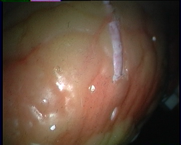
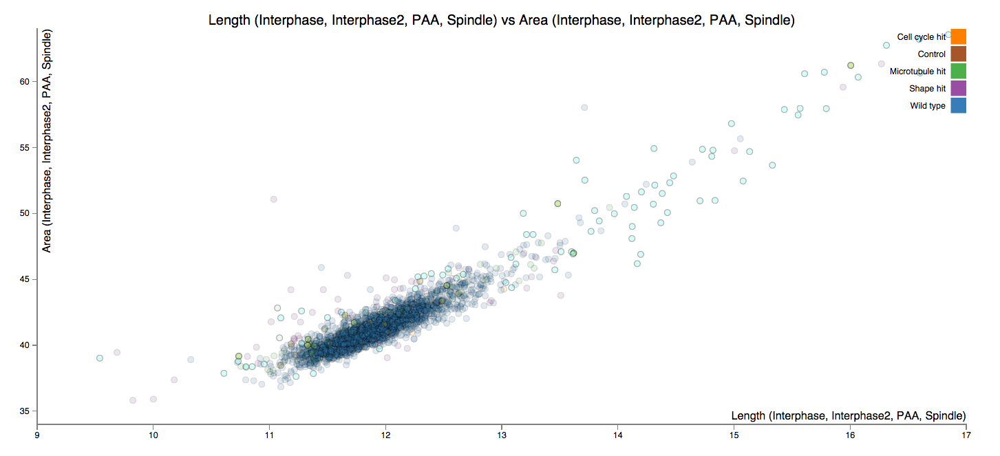
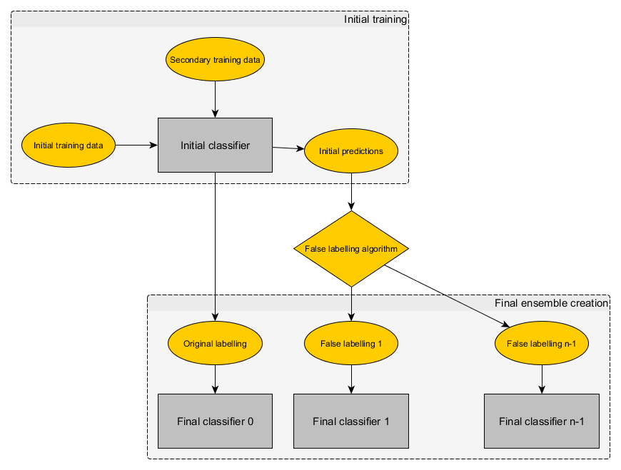
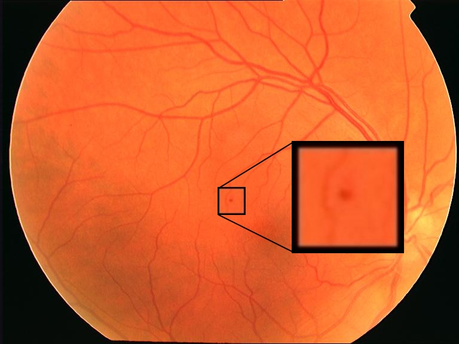
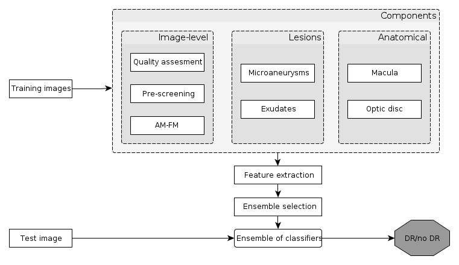

Data Scientist with proven track record in processing, analysing, visualizing and communicating results regarding complex and large data sets. Supervisor and leader of several machine learning, image processing and software engineering projects.
About Me
Latest Projects
BioImageNet
The Automatic System Biologist

New
High-throughput / high-content (HT/HC) microscopy is a very powerful of functional genomic, allowing the discovery of gene functions and biological processes. While acquisition of HT/HC screens is very resource demanding and costly, only the proof for the role of the investigated conditions are published, the data is not analyzed again.
The main pipeline of the proposed approach is based on the fusion of heterogeneous data sources. Representation of the heterogeneous data will be learnt, and a joint learning model will be established using Long Short-Term Memory Neural Networks. To automatically assign phenotypes to HT/HC images, published phentotypical databases will be processed and topic models will be used to represent the concepts from them. Finally, these models will be used to train classifiers to predict phenotypes on HT/HC screens.

3D reconstruction of stereo endoscopic videos using deep learning
In this paper, an automatic approach to predict 3D coordinates from stereo laparoscopic images is presented. The approach maps a vector of pixel intensities to 3D coordinates through training a six layer deep neural network. The architectural aspects of the approach is presented and in detail and the method is evaluated on a publicly available dataset with promising results.

Mineotaur - an interactive visual analytics tool for high-throughput microscopy screens
Mineotaur is a web application backed by a graph model-based database that allows easy online interactive visualisation of large screen datasets, facilitating their dissemination and further analysis, and enhancing their impact.

Fabel - Classifier Ensemble creation via false labelling
In this paper, a novel approach to classifier ensemble creation is presented. While other ensemble creation techniques are based on careful selection of existing classifiers or preprocessing of the data, the presented approach automatically creates an optimal labelling for a number of classifiers, which are then assigned to the original data instances and fed to classifiers. The approach has been evaluated on high-dimensional biomedical datasets. The results show that the approach outperformed individual approaches in all cases.

An Ensemble-based System for Microaneurysm Detection and Diabetic Retinopathy Grading:
Reliable microaneurysm detection in digital fundus images is still an open issue in medical image processing. We propose an ensemble-based framework to improve microaneurysm detection. Unlike the well-known approach of considering the output of multiple classifiers, we propose a combination of internal components of microaneurysm detectors, namely preprocessing methods and candidate extractors. We have evaluated our approach for microaneurysm detection in an online competition, where this algorithm is currently ranked as first and also on two other databases. Since microaneurysm detection is decisive in diabetic retinopathy grading, we also tested the proposed method for this task on the publicly available Messidor database, where a promising AUC 0.90 with 0.01 uncertainty is achieved in a 'DR/non-DR'-type classification based on the presence or absence of the microaneurysms.

An automatic screening system for diabetic retinopathy screening:
In this paper, an ensemble-based method for the screening of diabetic retinopathy (DR) is proposed. This approach is based on features extracted from the output of several retinal image processing algorithms, such as image-level (quality assessment, pre-screening, AM/FM), lesion-specific (microaneurysms, exudates) and anatomical (macula, optic disc) components. The actual decision about the presence of the disease is then made by an ensemble of machine learning classifiers. We have tested our approach on the publicly available Messidor database, where 90% sensitivity, 91% specificity and 90% accuracy and 0.989 AUC are achieved in a disease/no-disease setting. These results are highly competitive in this field and suggest that retinal image processing is a valid approach for automatic DR screening.
Work Experience
Co-Founder, Co-Director, Chief Technology Officer - CL-IC Technologies Ltd. (2014 – Present)
Design and build artificial intelligence algorithms and software systems to connect scientists to each other based on their skills and experience.
Assistant Professor, Assistant Lecturer - University of Debrecen, Faculty of Informatics (2012 - Present)
Research in machine learning and image processing. Taught various computer sciences courses, supervised several BSc, MSc, PhD theses, published research papers in top-tier journals.
Research Associate - University of Cambridge (2013 - 2015)
Image Data Repository: The biggest biological microscopy resource to data, storing terabytes of data. Designed and built data visualization and data processing algorithms. Mineotaur: designed and built a visual analytics tool for high-content microscopy. Mineotaur automatically generates a graph database for each biology screens, allowing the efficient querying of thousands of biological conditions and millions of data points.